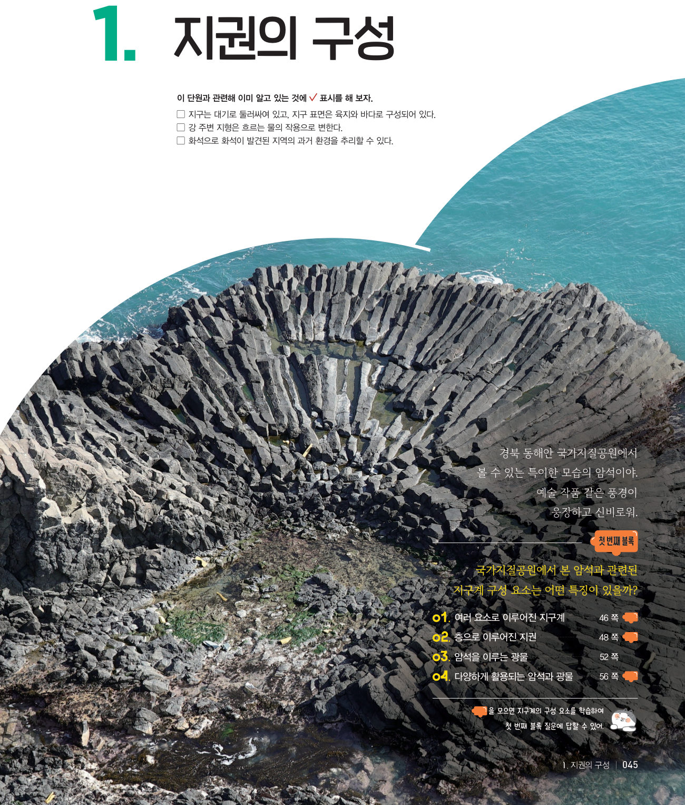
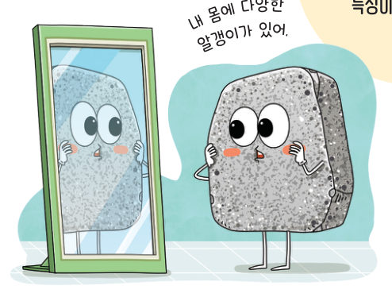
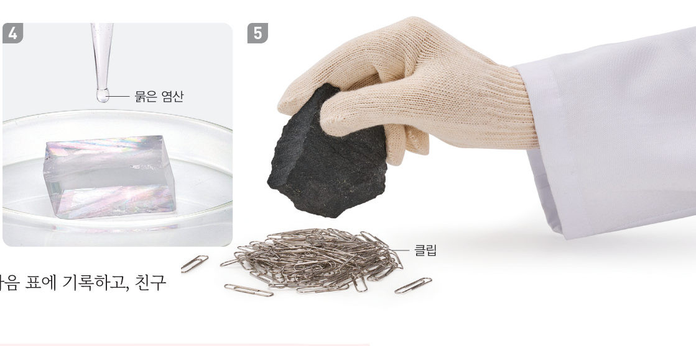
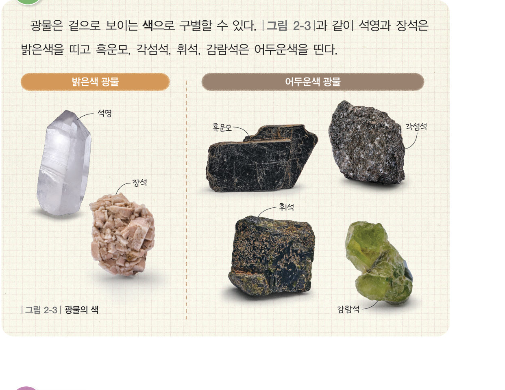
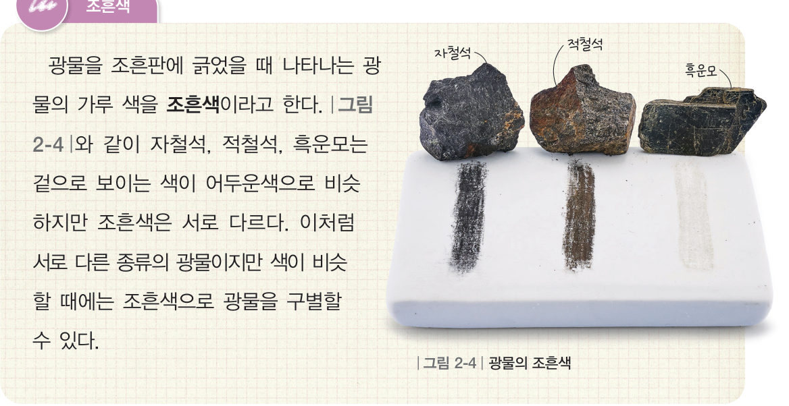
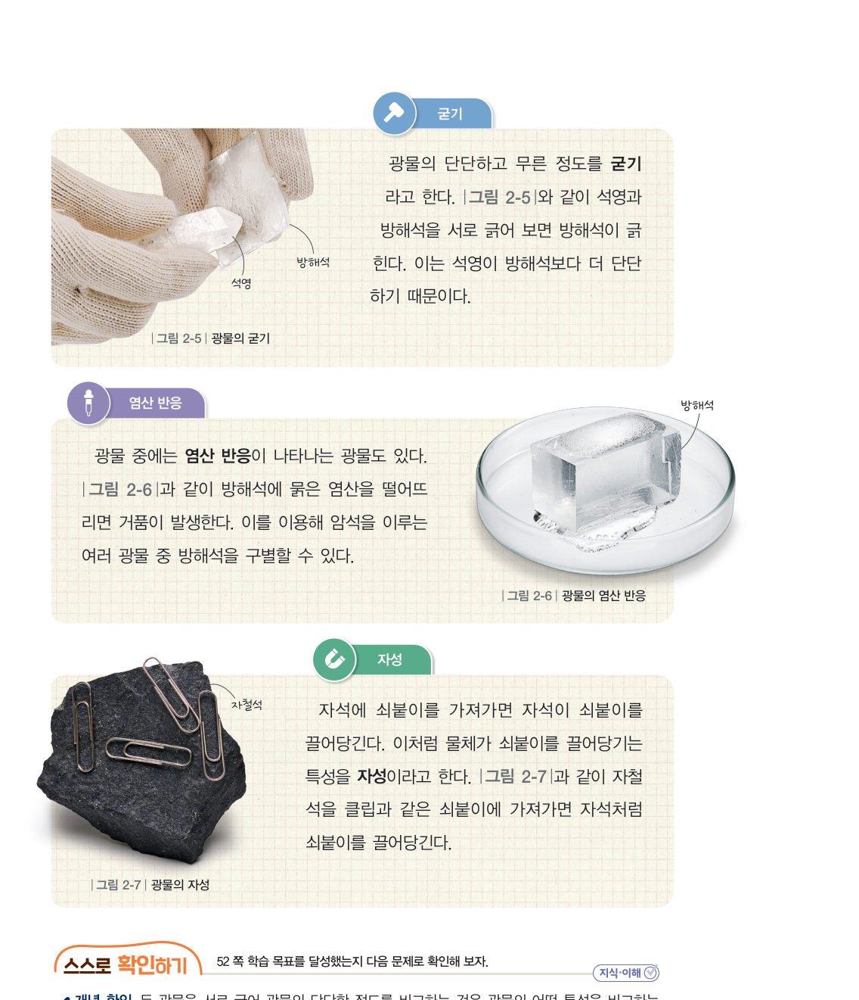

“내 몸에 다양한 알갱이가 있어.” 암석을 이루고 있는 다양한 알갱이는 어떤 특성이 있을까? 가상 실험대에서 광물 표본을 조흔판에 긁고, 서로 긁고, 염산을 떨어뜨리고, 클립에 대어 보며 광물을 구별해 보자.
지각은 암석으로 이루어져 있고, 암석은 여러 가지 알갱이로 이루어져 있다. 이렇게 암석을 이루는 기본 알갱이를 광물이라고 한다. 광물 중에서 암석을 이루는 주된 광물을 조암 광물이라고 하며, 조암 광물에는 석영, 장석, 흑운모, 각섬석, 휘석, 감람석 등이 있다.
●조흔판: 초벌구이한 도자기 판으로, 표면이 단단하고 거칠어 광물을 긁으면 광물의 가루 색을 볼 수 있다.

탐구에서 관찰한 광물 외의 다른 광물(예: 흑운모, 황철석, 형석)을 준비해 색, 광물의 가루 색, 긁힘 등의 특성을 관찰하고 정리해 보자.
광물은 색, 조흔색, 굳기 등 고유한 특성이 있다. 따라서 이와 같은 특성을 이용하면 광물을 구별할 수 있다.
색 광물은 겉으로 보이는 색으로 구별할 수 있다. 그림 2-3과 같이 석영과 장석은 밝은색을 띠고 흑운모, 각섬석, 휘석, 감람석은 어두운색을 띤다.

조흔색 광물을 조흔판에 긁었을 때 나타나는 광물의 가루 색을 조흔색이라고 한다. 그림 2-4와 같이 자철석, 적철석, 흑운모는 겉으로 보이는 색이 어두운색으로 비슷하지만 조흔색은 서로 다르다. 이처럼 서로 다른 종류의 광물이지만 색이 비슷할 때에는 조흔색으로 광물을 구별할 수 있다.


굳기 광물의 단단하고 무른 정도를 굳기라고 한다. 석영과 방해석을 서로 긁어 보면 방해석이 긁힌다. 이는 석영이 방해석보다 더 단단하기 때문이다.
염산 반응 방해석에 묽은 염산을 떨어뜨리면 거품이 발생한다. 이를 이용해 암석을 이루는 여러 광물 중 방해석을 구별할 수 있다.
자성 물체가 쇠붙이를 끌어당기는 특성을 자성이라고 한다. 자철석을 클립과 같은 쇠붙이에 가져가면 자석처럼 쇠붙이를 끌어당긴다.
| ③ 색은 광물의 특성이 아니다. | |
| ④ 광물을 구별하는 데 광물의 특성을 이용한다. | |
| ⑤ 광물의 단단하고 무른 정도를 굳기라고 한다. | |
| ⑥ 광물에 묽은 염산을 떨어뜨렸을 때 거품이 발생하는 것을 염산 반응이라고 한다. | |
| ⑦ 쇠붙이를 끌어당기는 성질을 조흔색이라고 한다. |
| 평가 기준 | 스스로 평가 |
|---|---|
| 과정·기능 관찰한 광물의 특성을 옳게 정리했는가? | |
| 가치·태도 안전에 유의하며 실험을 성실하게 수행했는가? |